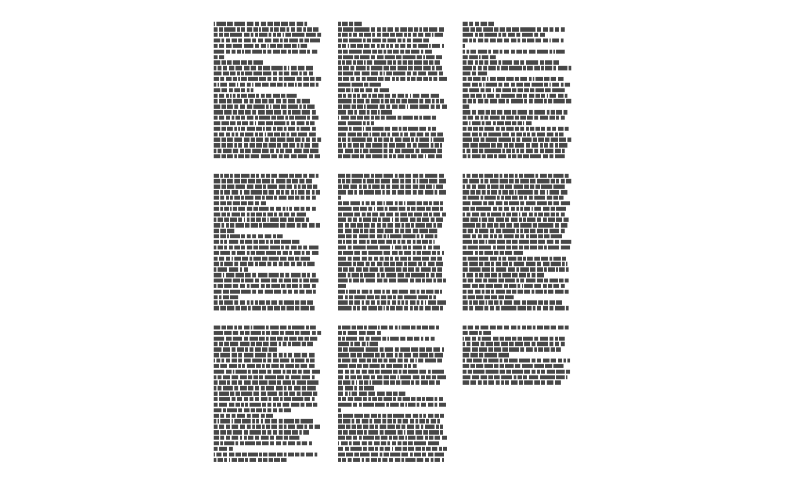

ggpage is a package to create pagestyled visualizations of text based data. It uses ggplot2 and final returns are ggplot2 objects.
Version 0.2.0
In this new version I have worked to include a lot of use cases that wasn’t available in the first version. These new elements are previewed in the vignette.
Installation
You can install the released version of ggpage from CRAN with:
or you can install the developmental version of ggpage from github with:
Example
The package includes The Tinder-box by H.C. Andersen for examples.
library(tidyverse)
library(ggpage)
head(tinderbox, 10)
#> # A tibble: 10 x 2
#> text book
#> <chr> <chr>
#> 1 "A soldier came marching along the high road: \"Left, rig… The tinder-…
#> 2 had his knapsack on his back, and a sword at his side; he… The tinder-…
#> 3 and was now returning home. As he walked on, he met a ver… The tinder-…
#> 4 witch in the road. Her under-lip hung quite down on her b… The tinder-…
#> 5 "and said, \"Good evening, soldier; you have a very fine … The tinder-…
#> 6 knapsack, and you are a real soldier; so you shall have a… The tinder-…
#> 7 "you like.\"" The tinder-…
#> 8 "\"Thank you, old witch,\" said the soldier." The tinder-…
#> 9 "\"Do you see that large tree,\" said the witch, pointing… The tinder-…
#> 10 "beside them. \"Well, it is quite hollow inside, and you … The tinder-…The basic workflow with ggpage is using either
-
ggpage_quickfor a quick one function call plot or, - combining
ggpage_buildandggpage_plotto do analysis (NLP for example) before the final plot is produced.
For a simple demonstration we apply ggpage_quick to our tinderbox object. It is important that the data.frame that is used have the text in a column named “text”.

The same result would be achieved by using
But this approach allows us to introduce more code between ggpage_build and ggpage_plot giving us multiple more ways to enhance the plots
tinderbox %>%
ggpage_build() %>%
mutate(long_word = stringr::str_length(word) > 8) %>%
ggpage_plot(aes(fill = long_word)) +
labs(title = "Longer words throughout The Tinder-box") +
scale_fill_manual(values = c("grey70", "blue"),
labels = c("8 or less", "9 or more"),
name = "Word length")
And it will work nicely with other tidyverse packages
library(ggpage)
library(purrr)
library(gganimate)
library(tidytext)
library(zoo)
prebuild <- tinderbox %>%
ggpage_build() %>%
left_join(get_sentiments("afinn"), by = "word")
midbuild <- map_df(.x = 0:50 * 10 + 1,
~ prebuild %>%
mutate(score = ifelse(is.na(score), 0, score),
score_smooth = zoo::rollmean(score, .x, 0),
score_smooth = score_smooth / max(score_smooth),
rolls = .x))
midbuild %>%
ggpage_plot(aes(fill = score_smooth)) +
scale_fill_gradient2(low = "red", high = "blue", mid = "grey", midpoint = 0) +
guides(fill = "none") +
labs(title = "Smoothed sentiment of The Tinder-box, rolling average of {round(frame_time)}") +
transition_time(rolls)
library(paletteer)
sentiment_types <- sentiments %>%
filter(lexicon == "nrc") %>%
pull(sentiment) %>%
unique()
prebuild <- imap_dfr(sentiment_types,
~ ggpage_build(tinderbox) %>%
left_join(filter(get_sentiments("nrc"), sentiment == .x), by = "word") %>%
mutate(sentiment_state = .x,
score = as.numeric(!is.na(sentiment)),
score_smooth = zoo::rollmean(score, 5, 0)))
prebuild %>%
ggpage_plot(aes(fill = score_smooth), page.number = "top-left") +
paletteer::scale_fill_paletteer_c(ggthemes, `Purple Sequential`) +
guides(fill = "none") +
transition_states(
sentiment_state,
transition_length = 10,
state_length = 3
) +
labs(title = "Sections with a sentiment of {closest_state}\nIn H.C. Andersen's Tinderbox")